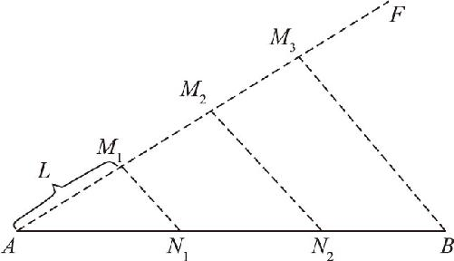
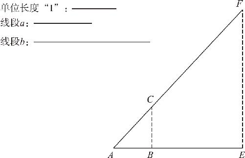

在介绍尺规作图时我们说过，几何里的尺规作图就是代数里的加减乘除．前文我们只是提到了加减法和乘法，而除法，只是研究了一下角平分线和垂直平分线的作法．我们要知道，做除法可不能只是处理2的倍数，如果遇到线段三等分的问题，又该如何处理呢？
要通过尺规作图处理乘除法的问题，必须要用到相似定理．相似定理又如何实现线段的三等分呢？其实，具体的操作方法还是蛮不讲理的，因为几何作图里头是绝对不允许使用刻度尺的．但是这次只能是不讲理一次了，我们要自己画一根刻度尺出来．
首先，题目给出一条线段AB 让我们三等分，就先把这条线段复制一条出来，这个操作我们已经很熟悉了，只需要用圆规比量一下就可以了．但接下来我就不讲理了，我以这个线段的端点A 为起点，往右上方画出一条射线AF ，然后我用圆规设定一个单位长度（可看作“1”），然后就在自己作的这条射线上依次作出三段标记M 1 ，M 2 ，M 3 ，使它们之间的间距相等．当上述操作完成后，就相当于在AB 上方斜着放了一把刻度尺．只不过，这把尺子的刻度是随意定的．在这里摆上一把刻度尺又有什么用处呢？就是要利用相似图形的性质，把这个均匀的比例缩放到已知线段AB 上．具体方法也很简单：先把这个刻度尺的最后一个端点M 3 和B 点连结起来，这样就形成了一个三角形ABM 3 ．现在只需要经过M 1 、M 2 这两个刻度点作两条平行于BM 3 的辅助线就可以了．平行线作完以后，就会把底边AB 均匀地切分为三段了．（如图9－5所示）具体操作过程如下：
第一步，过点A 作射线AF ，任选定长L ，在AF 上分别截取M 1 、M 2 、M 3 三点，使各点之间的间隔等于L ，并连结BM 3 ．
第二步，过点M 2 作M 2 N 2 ∥BM 3 ，交AB 于N 2 ．
第三步，过点M 1 作M 1 N 1 ∥BM 3 ，交AB 于N 1 ，N 1 和N 2 两点即为所求．

图9－5
以上，就是通过尺规作图对一条线段N 等分的办法．这也就是通过尺规作图实现除法的标准方法，上述操作的原理非常简单，但是操作却是相对比较复杂的，而且还蛮不讲理地作了一个刻度尺．关于刻度尺的问题，还是需要解释一下：之前之所以强调不用刻度尺，表达的主要含义是不需要标准的度量衡，不需要标准的刻度尺．虽然在做除法时自己仿造了一把刻度尺，但是由于我们画的这个刻度尺的刻度是随便定的，并不是标准的尺子，所以即使现在已经把线段分割完了，我们仍然不知道线段长度是多少．因此，这和通过真的刻度尺分割的原理还是有本质区别的．
接下来，我们再研究一下如何通过尺规作图实现真正的乘法：其实，在几何学里乘法有两个含义：一个含义是指长度变化，即直接把直线的长度增加多少倍；另一个含义则是指面积变化，即让两个线段相乘，变成面积．看起来好像长乘宽很容易实现，只需要作个长方形出来就可以了．但是，现在研究的是更复杂的一种方式：不需要作长方形，只是让你画一条线段出来，使这条线段等于已知的两条线段的乘积．按道理说，长度乘以长度应该得到面积，为什么还会是长度呢？这是因为，我们可以事先规定好单位长度．它表示的含义是：根据这个单位长度“1”，判断一下给定的这两条线段分别是这个“1”的几倍，然后把它们的乘积画出来．假设其中一条线段是单位长度“1”的2倍，另一条线段是其长度的3倍．那么，只要画出来的线长是它的6倍就可以了．但问题在于，两条线段是任意给定的，根本就不是单位长度的整数倍，那么，我们应该如何实现线段的乘积呢？同样需要用相似原理！
题目给定的三条线段如图9－6所示：求作一条线段c ，使线段c 的长度满足c ＝a ×b ．由题意得知，a 、b 、c 三条线段的比例关系为c ∶b ＝a ∶1，所以我们可以把单位长度和线段a 的长度拼成一个三角形，再把这个三角形放大b 倍，就得到了所求线段．具体的操作步骤如下：
第一步，作出任意角A ，在∠A 的两条边上分别截取AB ，长度等于“1”，AC 的长度等于线段a 的长，最后连结BC ．
第二步，延长AB 至E ，使得AE 的长度等于线段b 的长度，过E 点作EF ∥BC ，交AC 的延长线于点F ，线段AF 即为所求．
证明过程如下：
∵EF ∥BC （作图所得），
∴AF ∶AE ＝AC ∶AB （相似定理）．
又∵AB ＝1，AC ＝a ，AE ＝b （作图所得），
∴AF ∶b ＝a ∶1（等量代换），
∴AF ＝a ·b ．

图9－6
以上就是通过尺规作图实现乘法的具体步骤．至此，几何作图的加减乘除就全部介绍完了．在几何学里，加减法通常要利用全等的原理去做，可以在线的基础上加减线，或者角的基础上加减角；乘除法，通常都用相似图形的原理去做，把要乘除的线摆在相似三角形的两边，最后用第三边的平行线一截，就得到了我们想要的结果．那么，线段的长度可以乘除了，角的大小能除吗？